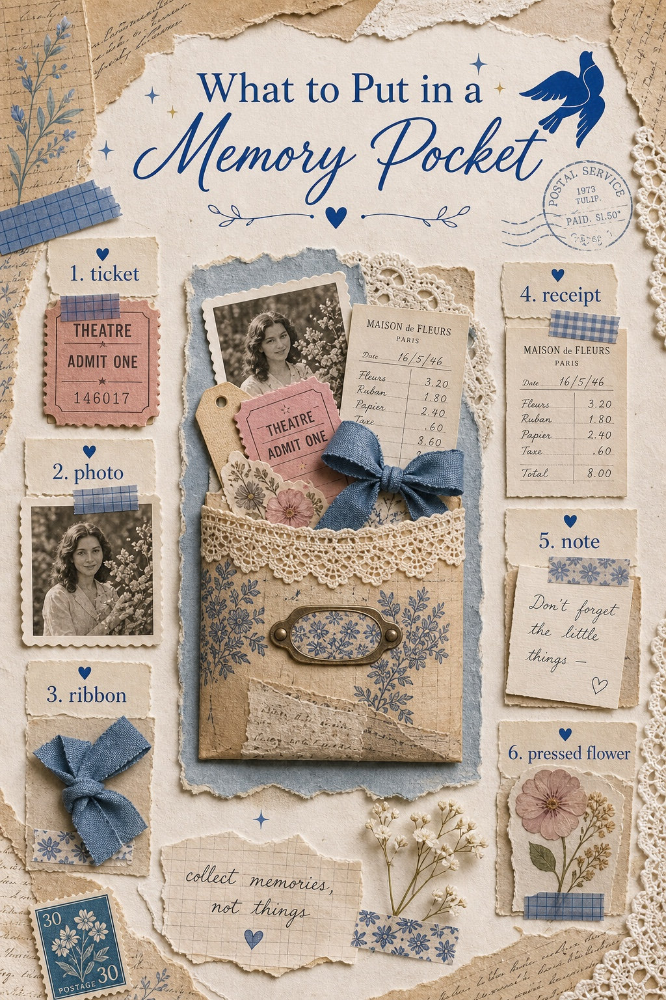
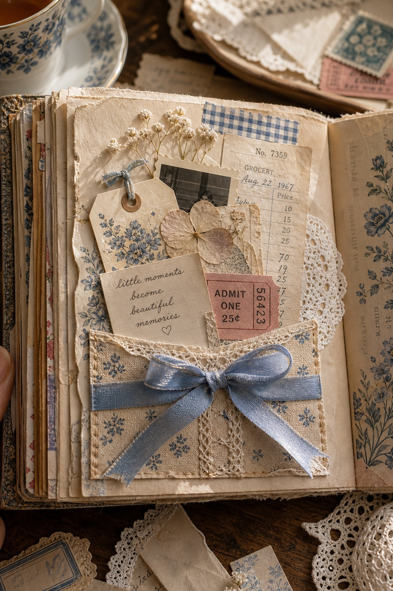

A memory pocket gives a page a secret. It is not just decoration; it is a place to tuck the little pieces that would otherwise disappear.

Start With Flat Pieces
Tickets, receipts, photos, and notes are easiest to tuck in because they do not add too much bulk. Let one piece peek out so the pocket looks inviting instead of sealed shut.

Add One Soft Texture
Ribbon or lace makes the pocket feel handmade. Use a small strip, not a huge bow, so the pocket still opens easily.
Keep the Product at the End
If you want a soft romantic base for this kind of page, choose printable pages that already give you cream paper, florals, lace mood, and enough quiet space for your own saved pieces.